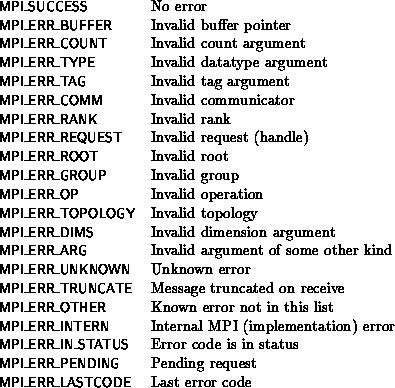
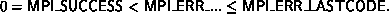

The error codes returned by MPI are left entirely to the implementation (with the exception of MPI_SUCCESS). This is done to allow an implementation to provide as much information as possible in the error code (for use with MPI_ERROR_STRING).
To make it possible for an application to interpret an error code, the routine MPI_ERROR_CLASS converts any error code into one of a small set of standard error codes, called error classes. Valid error classes include

The error classes are a subset of the error codes: an MPI function may return an error class number; and the function MPI_ERROR_STRING can be used to compute the error string associated with an error class.
The error codes satisfy,

[] Rationale.
The difference between MPI_ERR_UNKNOWN and MPI_ERR_OTHER is that MPI_ERROR_STRING can return useful information about MPI_ERR_OTHER.
Note that MPI_SUCCESS = 0 is necessary to be
consistent with C practice; the separation of error classes and error codes
allows us to define the error classes this way. Having a known
LASTCODE is often a nice sanity check as well.
( End of rationale.)
MPI_ERROR_CLASS( errorcode, errorclass )
[ IN errorcode] Error code returned by an MPI routine
[ OUT errorclass] Error class associated with errorcode
int MPI_Error_class(int errorcode, int *errorclass)
MPI_ERROR_CLASS(ERRORCODE, ERRORCLASS, IERROR)
INTEGER ERRORCODE, ERRORCLASS, IERROR
The function MPI_ERROR_CLASS maps each standard error code (error class) onto itself.